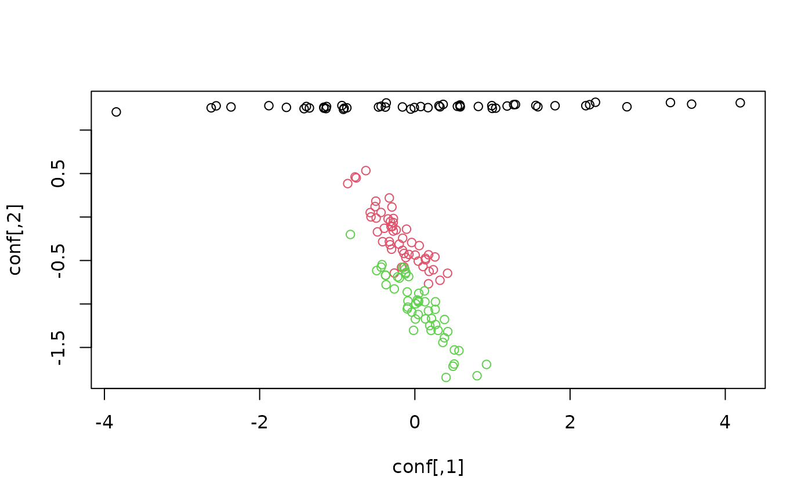
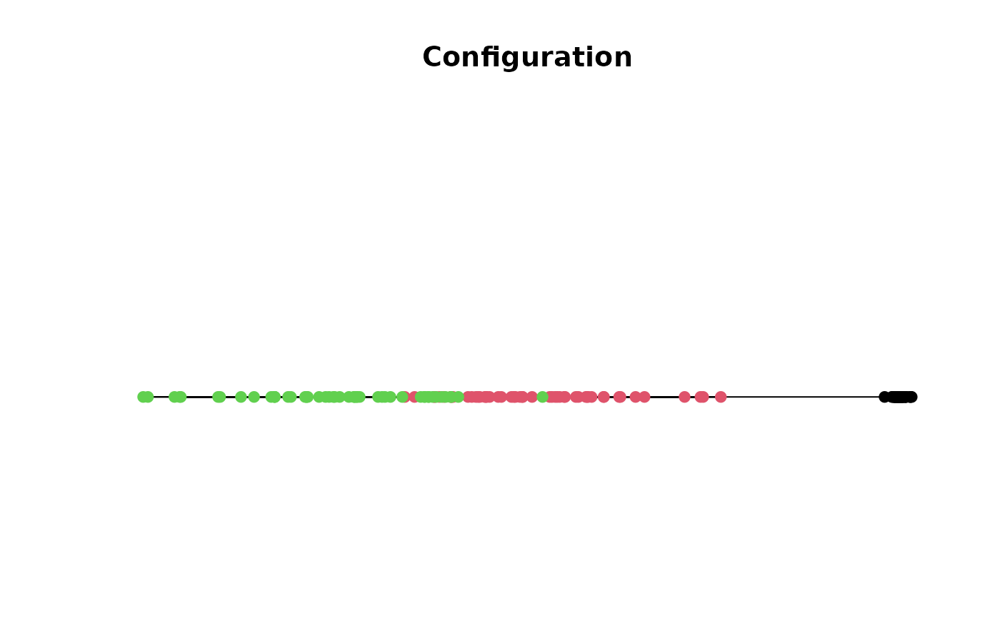

Performs the non linear dimensionality reduction method locally linear embedding proposed in Roweis and Saul (2000).
Details
LLE tries to find a lower-dimensional projection which preserves distances within local neighborhoods. This is done by (1) find for each object the k nearest neighbors, (2) construct the LLE weight matrix which represents each point as a linear combination of its neighborhood, and (2) perform partial eigenvalue decomposition to find the embedding.
The reg parameter allows the decision between different regularization methods.
As one step of the LLE algorithm, the inverse of the Gram-matrix \(G\in R^{kxk}\)
has to be calculated. The rank of \(G\) equals \(m\) which is mostly smaller
than \(k\) - this is why a regularization \(G^{(i)}+r\cdot I\) should be performed.
The calculation of regularization parameter \(r\) can be done using different methods:
reg = 1: standardized sum of eigenvalues of \(G\) (Roweis and Saul; 2000)reg = 2(default): trace of Gram-matrix divided by \(k\) (Grilli, 2007)reg = 3: constant value 3*10e-3
References
Roweis, Sam T. and Saul, Lawrence K. (2000), Nonlinear Dimensionality Reduction by Locally Linear Embedding, Science, 290(5500), 2323–2326. doi:10.1126/science.290.5500.2323
Grilli, Elisa (2007) Automated Local Linear Embedding with an application to microarray data, Dissertation thesis, University of Bologna. doi:10.6092/unibo/amsdottorato/380
See also
Other helper:
LS,
uniscale()
Examples
data(iris)
x <- iris[, -5]
# project iris on 2 dimensions
conf <- lle(x, m = 2, k = 30)
conf
#> [,1] [,2]
#> [1,] 0.582625348 1.277719259
#> [2,] -1.144646751 1.247143401
#> [3,] -1.137951008 1.271129435
#> [4,] -1.655188012 1.261127858
#> [5,] 0.580096171 1.288270924
#> [6,] 2.203018869 1.280541211
#> [7,] -0.940222121 1.281922032
#> [8,] 0.074732464 1.270571144
#> [9,] -2.624603377 1.255847366
#> [10,] -0.876424763 1.255805682
#> [11,] 1.806672859 1.280098648
#> [12,] -0.434636858 1.274001075
#> [13,] -1.358673848 1.254492591
#> [14,] -2.560326547 1.278891630
#> [15,] 3.565977853 1.298229977
#> [16,] 4.193129649 1.313539784
#> [17,] 2.252286220 1.292098709
#> [18,] 0.547728226 1.273454893
#> [19,] 2.732973819 1.268091685
#> [20,] 1.273433475 1.292645389
#> [21,] 1.041819070 1.252216230
#> [22,] 0.991914658 1.281039608
#> [23,] -0.368598147 1.312146034
#> [24,] -0.053091937 1.241550425
#> [25,] -0.468267685 1.265238453
#> [26,] -0.920653815 1.238185111
#> [27,] -0.007182899 1.259144823
#> [28,] 0.817860564 1.271636880
#> [29,] 0.584356744 1.267143041
#> [30,] -1.173375421 1.262416054
#> [31,] -1.171187817 1.251858155
#> [32,] 0.997371666 1.249533223
#> [33,] 2.327383666 1.319845670
#> [34,] 3.293427997 1.316444539
#> [35,] -0.910949513 1.251583791
#> [36,] -0.379991798 1.264522965
#> [37,] 1.585128627 1.268031525
#> [38,] 0.364915538 1.295615984
#> [39,] -2.369117574 1.266037021
#> [40,] 0.323720566 1.267397029
#> [41,] 0.310025758 1.279507309
#> [42,] -3.847518179 1.208572794
#> [43,] -1.881248705 1.280568758
#> [44,] 0.169324528 1.258125675
#> [45,] 1.188749400 1.276790724
#> [46,] -1.427303975 1.246115737
#> [47,] 1.296097117 1.293988878
#> [48,] -1.397973816 1.271394088
#> [49,] 1.558861261 1.283243224
#> [50,] -0.159910066 1.266077408
#> [51,] 0.421270909 -0.646481030
#> [52,] 0.136653530 -0.474972833
#> [53,] 0.323668151 -0.727507118
#> [54,] -0.565633917 0.001494707
#> [55,] 0.043748433 -0.507506102
#> [56,] -0.328797609 -0.282462485
#> [57,] 0.105467052 -0.569316762
#> [58,] -0.770269310 0.460886315
#> [59,] 0.137309374 -0.491971921
#> [60,] -0.575341368 0.051079282
#> [61,] -0.865246446 0.384726818
#> [62,] -0.157321275 -0.243561739
#> [63,] -0.345487899 -0.021569973
#> [64,] -0.116692015 -0.465673876
#> [65,] -0.295536742 0.115405433
#> [66,] 0.258985989 -0.458767150
#> [67,] -0.319449911 -0.318751442
#> [68,] -0.278537306 -0.062942369
#> [69,] -0.300233181 -0.370162095
#> [70,] -0.436159389 0.052387664
#> [71,] -0.138528869 -0.574189871
#> [72,] -0.107420244 -0.139717116
#> [73,] -0.171572601 -0.578691129
#> [74,] -0.140517243 -0.418556541
#> [75,] 0.056171782 -0.328628676
#> [76,] 0.176760999 -0.433977961
#> [77,] 0.183782609 -0.625690246
#> [78,] 0.175924859 -0.767583457
#> [79,] -0.159190415 -0.382822965
#> [80,] -0.329312135 0.219459072
#> [81,] -0.512713629 0.120165424
#> [82,] -0.502913667 0.182640939
#> [83,] -0.276767976 -0.016729153
#> [84,] -0.264636358 -0.644391320
#> [85,] -0.415251529 -0.283488135
#> [86,] 0.003883132 -0.437879826
#> [87,] 0.237424102 -0.606442383
#> [88,] -0.202018846 -0.312152714
#> [89,] -0.288808423 -0.107789856
#> [90,] -0.498552868 -0.012356920
#> [91,] -0.482225702 -0.170877386
#> [92,] -0.077046702 -0.430100771
#> [93,] -0.315906777 -0.052664542
#> [94,] -0.755476082 0.450229872
#> [95,] -0.394329011 -0.129517438
#> [96,] -0.241301254 -0.148575906
#> [97,] -0.278753265 -0.161211439
#> [98,] -0.040990855 -0.293011446
#> [99,] -0.631469405 0.533912374
#> [100,] -0.306800415 -0.111379083
#> [101,] -0.016861812 -1.303305314
#> [102,] -0.377444370 -0.669571417
#> [103,] 0.299391349 -1.303849360
#> [104,] -0.089554106 -0.964695452
#> [105,] 0.007039570 -1.173267793
#> [106,] 0.506782432 -1.690324560
#> [107,] -0.830354030 -0.200481757
#> [108,] 0.360384816 -1.442356238
#> [109,] -0.038847678 -1.093962040
#> [110,] 0.509150756 -1.528478871
#> [111,] 0.123743860 -0.849223234
#> [112,] -0.098494793 -0.861424322
#> [113,] 0.174384112 -1.079392639
#> [114,] -0.492276689 -0.615812221
#> [115,] -0.371095971 -0.777994841
#> [116,] 0.046640980 -0.977222870
#> [117,] 0.046447628 -0.964618260
#> [118,] 0.801582145 -1.825562344
#> [119,] 0.402236801 -1.845107369
#> [120,] -0.422907555 -0.547266152
#> [121,] 0.266956723 -1.236855419
#> [122,] -0.434006577 -0.576190193
#> [123,] 0.491367427 -1.716289079
#> [124,] -0.120275045 -0.653213321
#> [125,] 0.214996779 -1.167407848
#> [126,] 0.424296725 -1.317746246
#> [127,] -0.128783804 -0.599967595
#> [128,] -0.114982963 -0.638495765
#> [129,] -0.091995705 -1.036122731
#> [130,] 0.382170393 -1.178138088
#> [131,] 0.381169013 -1.388603960
#> [132,] 0.923095110 -1.694942679
#> [133,] -0.097516792 -1.056511829
#> [134,] -0.080006245 -0.684427184
#> [135,] -0.264764500 -0.826982015
#> [136,] 0.568144393 -1.536488319
#> [137,] 0.042785425 -1.120762606
#> [138,] 0.031159091 -0.953635792
#> [139,] -0.157707871 -0.578203343
#> [140,] 0.261711339 -1.061633638
#> [141,] 0.136143186 -1.171559543
#> [142,] 0.264960181 -0.974342519
#> [143,] -0.377444370 -0.669571417
#> [144,] 0.208349594 -1.303933050
#> [145,] 0.191500870 -1.248039264
#> [146,] 0.129549390 -0.974164927
#> [147,] -0.199258466 -0.702188906
#> [148,] 0.050626855 -0.877692249
#> [149,] 0.011511722 -0.997995530
#> [150,] -0.222127082 -0.687886405
plot(conf, col = iris[, 5])

# project iris onto a single dimension
conf <- lle(x, m = 1, k = 30)
conf
#> [1] 1.277719259 1.247143401 1.271129435 1.261127858 1.288270924
#> [6] 1.280541211 1.281922032 1.270571144 1.255847366 1.255805682
#> [11] 1.280098648 1.274001075 1.254492591 1.278891630 1.298229977
#> [16] 1.313539784 1.292098709 1.273454893 1.268091685 1.292645389
#> [21] 1.252216230 1.281039608 1.312146034 1.241550425 1.265238453
#> [26] 1.238185111 1.259144823 1.271636880 1.267143041 1.262416054
#> [31] 1.251858155 1.249533223 1.319845670 1.316444539 1.251583791
#> [36] 1.264522965 1.268031525 1.295615984 1.266037021 1.267397029
#> [41] 1.279507309 1.208572794 1.280568758 1.258125675 1.276790724
#> [46] 1.246115737 1.293988878 1.271394088 1.283243224 1.266077408
#> [51] -0.646481030 -0.474972833 -0.727507118 0.001494707 -0.507506102
#> [56] -0.282462485 -0.569316762 0.460886315 -0.491971921 0.051079282
#> [61] 0.384726818 -0.243561739 -0.021569973 -0.465673876 0.115405433
#> [66] -0.458767150 -0.318751442 -0.062942369 -0.370162095 0.052387664
#> [71] -0.574189871 -0.139717116 -0.578691129 -0.418556541 -0.328628676
#> [76] -0.433977961 -0.625690246 -0.767583457 -0.382822965 0.219459072
#> [81] 0.120165424 0.182640939 -0.016729153 -0.644391320 -0.283488135
#> [86] -0.437879826 -0.606442383 -0.312152714 -0.107789856 -0.012356920
#> [91] -0.170877386 -0.430100771 -0.052664542 0.450229872 -0.129517438
#> [96] -0.148575906 -0.161211439 -0.293011446 0.533912374 -0.111379083
#> [101] -1.303305314 -0.669571417 -1.303849360 -0.964695452 -1.173267793
#> [106] -1.690324560 -0.200481757 -1.442356238 -1.093962040 -1.528478871
#> [111] -0.849223234 -0.861424322 -1.079392639 -0.615812221 -0.777994841
#> [116] -0.977222870 -0.964618260 -1.825562344 -1.845107369 -0.547266152
#> [121] -1.236855419 -0.576190193 -1.716289079 -0.653213321 -1.167407848
#> [126] -1.317746246 -0.599967595 -0.638495765 -1.036122731 -1.178138088
#> [131] -1.388603960 -1.694942679 -1.056511829 -0.684427184 -0.826982015
#> [136] -1.536488319 -1.120762606 -0.953635792 -0.578203343 -1.061633638
#> [141] -1.171559543 -0.974342519 -0.669571417 -1.303933050 -1.248039264
#> [146] -0.974164927 -0.702188906 -0.877692249 -0.997995530 -0.687886405
plot_config(conf, col = iris[, 5], labels = FALSE)
